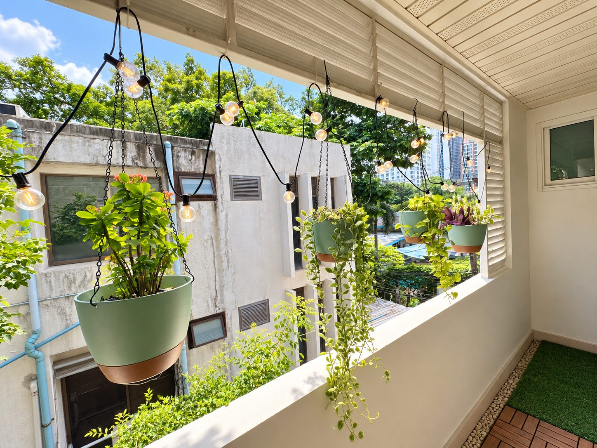
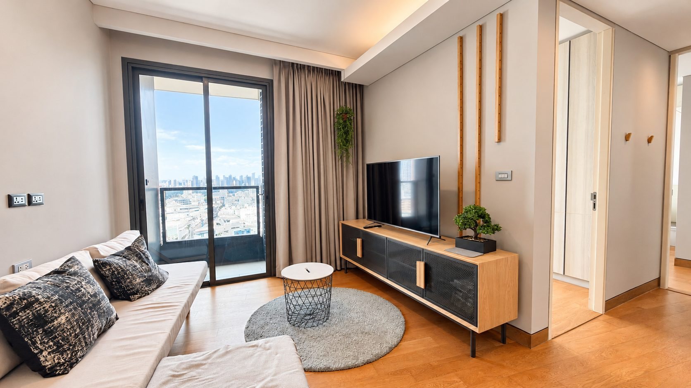

01 / Privacy
Garden-facing calmHomes selected for light, privacy and the small conditions that make Bangkok feel slower. This is not a filter. It is a point of view.

It is the feeling that the city can wait outside: a long view, a pocket of green, a room that gathers light.
